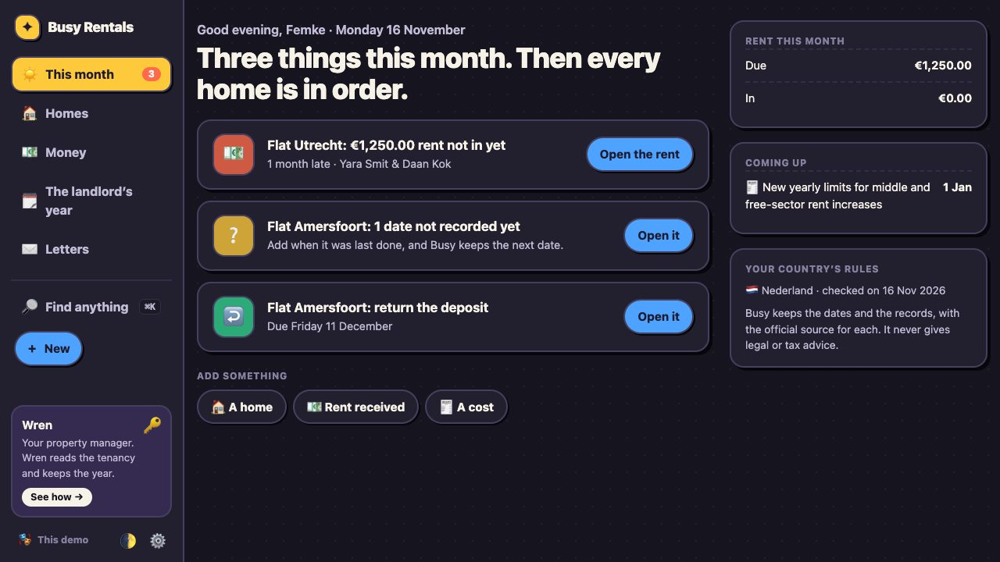

Busy Rentals · free, private, no account
Be the landlord people hope for.
Rental management for people who let one home or a few: the dates, the papers, the rent and the tax year, in one place. Good tenants stay where a home is well looked after.
Free app for Mac and Windows · No AI · Nothing is sent to us · With Wren, your property manager: $4.99 once

Busy Rentals in short
What is Busy Rentals?
Busy Rentals is a free app for Mac and Windows for people who let one home or a few. It keeps every date, certificate, deposit, rent payment and receipt in a folder on your own computer.
Who is it for?
People who let one home or a few and run it themselves: someone who moved in with a partner and kept their flat, inherited a parent's home, or bought one for their pension.
Which countries does Busy Rentals cover?
England, the Netherlands and Germany: each duty Busy keeps, with how often it comes back, its official page and the date Busy last checked it. In any other country, Busy keeps your homes, rent, deposits, costs and letters, without country dates.
What does it cost?
Busy Rentals is free, with no account and no subscription. Wren, the AI property manager, comes in the paid edition: Busy Rentals with Wren, $4.99 once on itch.io.
Is there AI in the free version?
No. The free Busy Rentals has no AI and sends nothing anywhere. Only Wren, in the paid edition, uses AI: Claude, on your own Claude account.
Does Busy give legal or tax advice?
No. Busy states each rule plainly, links the official page and shows when it was checked. For advice, ask a solicitor, an accountant or your landlords' association.
4 tools that work together
This month shows at most three things to do. The landlord's year shows every date. Try them all in the demo →
Homes & Tenancies
Every home you let, who lives there, and every check and certificate with its date and its official source.
More about Homes & Tenancies →💶Rent & Deposits
What came in, what is late, and where each deposit stands: the cap, and the date to protect or return it.
More about Rent & Deposits →✉️Letters to Tenants
A welcome, a visit, a repair, a copy of a certificate and the deposit at the end, in six languages: you choose for each tenant.
More about Letters to Tenants →🧾Costs & the Tax Year
Costs per home with the receipt, and each home's totals for the year, ready for your return or your accountant.
More about Costs & the Tax Year →Your country's landlord year, built in
A few of the dates Busy keeps for you. Every duty in the app links its official page and shows when Busy last checked it. Rules marked as changing are checked again before each release.
England
- A gas safety check every 12 months, with a copy to the tenant within 28 days. Official page ↗
- An electrical safety check at least every 5 years, with a copy within 28 days. Official page ↗
- The deposit: at most 5 weeks' rent, or 6 weeks when the rent is £50,000 a year or more, protected within 30 days. Official page ↗ Official page ↗
- The new landlord register opens region by region from 15 December 2026, at £65 per property per year. Changing Applies to some homes Official page ↗
The Netherlands
- An energy label, valid for 10 years, given at letting. Official page ↗
- The yearly service-cost statement, by 30 June for the year before. Changing Applies to some homes Official page ↗
- The deposit: at most 2 months' bare rent, returned within 14 days, or 30 days when costs are kept back. Official page ↗
Germany
- The service-charge statement within 12 months of the end of the billing period. Official page ↗
- The deposit: at most 3 months' rent without the service-charge advance. Official page ↗
- Where heating or hot water is shared and billed by use: meters fitted before 1 December 2021 that cannot be read remotely are retrofitted or replaced by 31 December 2026; the rule has exceptions. Applies to some homes Official page ↗
Checked on 16 November 2026. Busy states the rules; it never gives legal or tax advice.
Free, or with Wren
Free: the boring part made easy, with no account and no AI. Paid: the boring part done for you by an expert, for a few dollars, once. That is what keeps Busy going.
| Busy Rentals free | With Wren $4.99 once | |
|---|---|---|
| Every date, certificate, deposit and payment, in your own folder | ✓ | ✓ |
| Your country's landlord year: England, the Netherlands, Germany | ✓ | ✓ |
| Check-in and check-out reports, letters to tenants, the tax year | ✓ | ✓ |
| Reads the tenancy agreement and fills in the dates | – | ✓ |
| A monthly briefing, and the certificate round prepared | – | ✓ |
| Drafts the deposit letter, the repair reply and the rent review | – | ✓ |
| AI | None | Claude, on your own account |
Your tenants' details stay yours
Everything in your own folder
Tenancies, deposits, certificates and receipts are kept as plain files in a folder you choose. There is no Busy account and no Busy server, so there is nothing to hack and nothing to sell.
Get Busy Rentals
Free, the whole set. No account, no subscription, no AI, nothing sent to us.
Install Busy Rentals
The free app for Mac and Windows, in beta. No account, no AI.
Add the home you let
Its address and its country: Busy loads that country's duties.
Your own folder
Your homes, tenancies, certificates and receipts are saved as plain files in a folder you choose.
Record what is done
The last gas check or energy label, the rent, the deposit: Busy keeps every next date.
Free · Beta · Mac: macOS 13 or newer, Apple chip or Intel · Windows 10 or 11, 64-bit
Opening it the first time
The beta isn’t signed by Apple or Microsoft yet, so your computer asks first, once. Mac: open the downloaded file, drag Busy Rentals into Applications and open it. Click Done, then open System Settings → Privacy & Security, scroll down and click Open Anyway. Windows: run the downloaded file; if Windows says it protected your PC, click More info, then Run anyway.
Can’t install apps? Use the browser version (zip) in Chrome or Edge.
Want the expert too? Busy Rentals with Wren · $4.99

Wren by Busy · $4.99 once
Your property manager
Drop in the tenancy agreement and Wren fills in the dates, the rent and the deposit. She keeps the landlord's year, prepares the certificate round, compares check-out with check-in and drafts every letter to your tenants. Each one waits for your yes. She never gives legal or tax advice: she tells you when to ask a professional.
- Reads the tenancy and keeps every date
- Drafts the letters, the deposit statement and the rent review
- Fair to tenants and landlords alike
- On your own Claude: the Claude app with a paid plan, or a Claude API key
Questions
What is Busy Rentals?
Busy Rentals is a free app for Mac and Windows for people who let one home or a few. It keeps every date, certificate, deposit, rent payment and receipt in a folder on your own computer.
Who is it for?
People who let one home or a few and run it themselves: someone who moved in with a partner and kept their flat, inherited a parent's home, or bought one for their pension.
Which countries does Busy Rentals cover?
England, the Netherlands and Germany: each duty Busy keeps, with how often it comes back, its official page and the date Busy last checked it. In any other country, Busy keeps your homes, rent, deposits, costs and letters, without country dates.
What does it cost?
Busy Rentals is free, with no account and no subscription. Wren, the AI property manager, comes in the paid edition: Busy Rentals with Wren, $4.99 once on itch.io.
Is there AI in the free version?
No. The free Busy Rentals has no AI and sends nothing anywhere. Only Wren, in the paid edition, uses AI: Claude, on your own Claude account.
Does Busy give legal or tax advice?
No. Busy states each rule plainly, links the official page and shows when it was checked. For advice, ask a solicitor, an accountant or your landlords' association.
Can a partner or co-owner use it too?
Yes. Put the folder in Google Drive, Dropbox, OneDrive or iCloud Drive and open it on each computer.
Does Busy collect the rent or send letters?
No. Busy keeps the record and drafts the letters; the rent and the letters go the way they do now.
Which languages?
The app and the letters to tenants are in English, Dutch, German, Spanish, Italian and Brazilian Portuguese. A letter starts in the home's country's language, and you can choose another for each tenant.
Which computers?
The free app is for Mac and Windows, in beta. The Windows installer has not yet been run by us on a Windows computer: tell us how it goes. Without installing, a folder that runs in Chrome or Edge is there too.
Be the landlord people hope for.
Busy Rentals is free. Wren does the boring part for you.